Headliner: Service and Repair
Headliner Removal/InstallationSpecial Tools Required
KTC trim tool set SOJATP2014 *
* Available through the American Honda Tool and Equipment Program
SRS components are located in this area. Review the SRS component locations and the precautions and procedures before doing repairs or service.
NOTE:
- Use the appropriate tool from the KTC trim tool set to avoid damage when removing components.
- Take care not to bend and scratch the headliner.
- Be careful not to damage the dashboard and other interior trim.
1. Remove these items:
- A-pillar trim, both sides
- Front seat belt upper anchor, both sides.
- B-pillar lower trim, both sides
- B-pillar upper trim, both sides
- Quarter pillar trim, both sides
- Sunvisors, both sides
- Grab handles, four places
- Rear individual map light
- Rear ceiling light
- Center second row seat belt cover
- RES display cover (for some models)
- Roof console
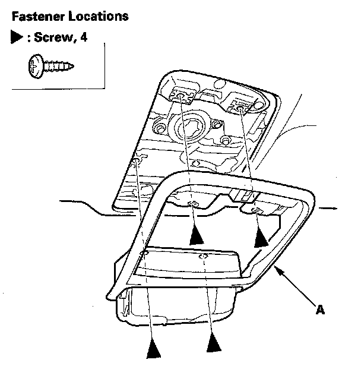
2. Remove the screws, then remove the roof console bezel (A).
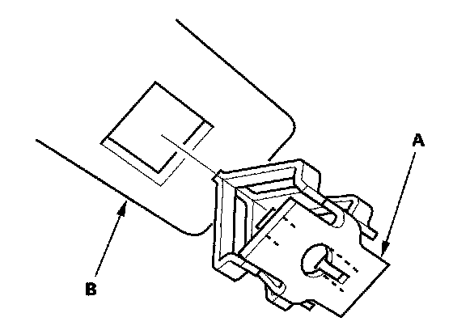
3. If necessary, remove the remaining roof console clips (A) from the body and the moonroof frame (B).
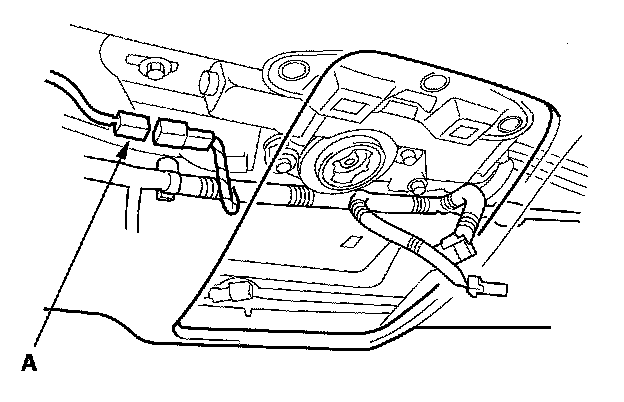
4. Disconnect the roof wire harness connector (A).
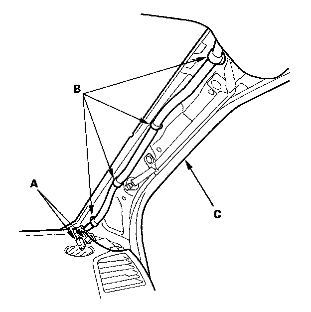
5. With rear entertainment system: Disconnect the rear entertainment system wire harness connectors (A) and detach the harness clips (B) from the left A-pillar (C).
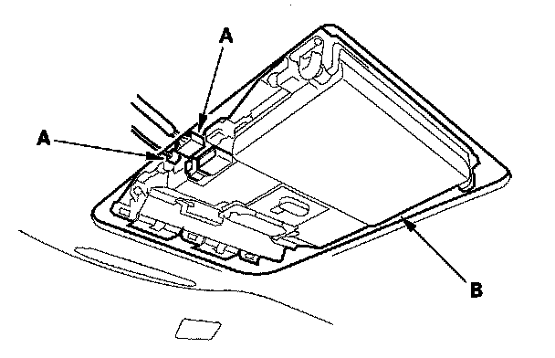
6. With rear entertainment system: Disconnect the rear entertainment wire harness connectors (A) from the rear controller and display (B).
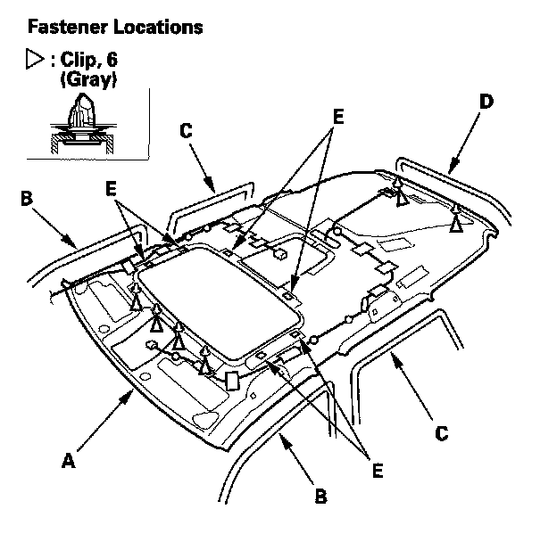
7. Lower the headliner (A). The vehicle with rear entertainment system is shown; and without rear entertainment system is similar.
1. Remove the front door opening seals (B), rear door opening seals (C), and tailgate weatherstrip (D) from each roof portion.
2. With the help of an assistant, detach the rear clips by pulling the rear portion of the headliner down.
3. With the help of an assistant, release the fasteners (E) by lowering the headliner.
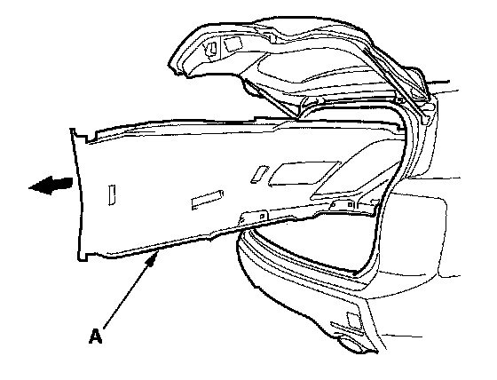
8. With the help of an assistant, pull the headliner (A) along with the roof wire harness and rear entertainment system wire harness (for some models) out through the tailgate opening. Do not bend the liner. Bending the liner will crease and damage it.
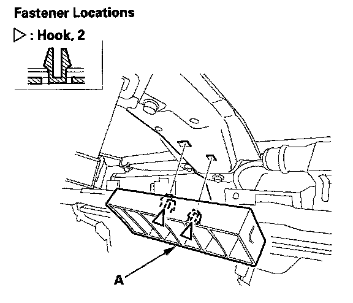
9. If necessary, detach the hooks, then remove the roof side pad (A).
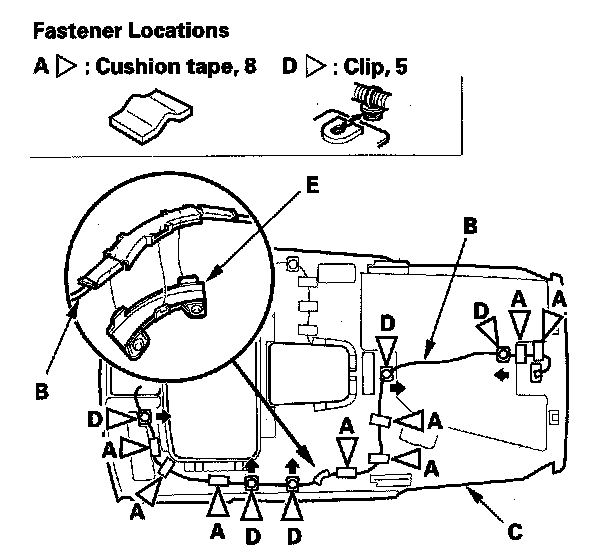
10. If necessary, remove the cushion tapes (A) fastening the roof wire harness (B) to the headliner (C), detach the harness clips (D) and release the harness from the harness protector base (E), then remove them from the headliner.
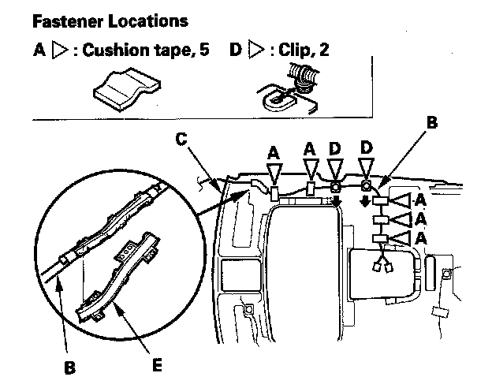
11. With rear entertainment system: If necessary, remove the cushion tape (A) fastening the rear entertainment system wire harness (B) to the headliner (C), detach the harness clips (D) and release the harness from the harness protector base (E), then remove them from the headliner.
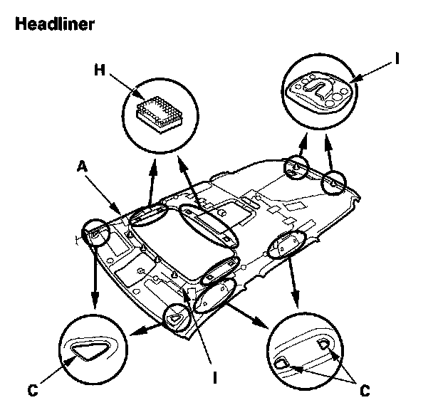
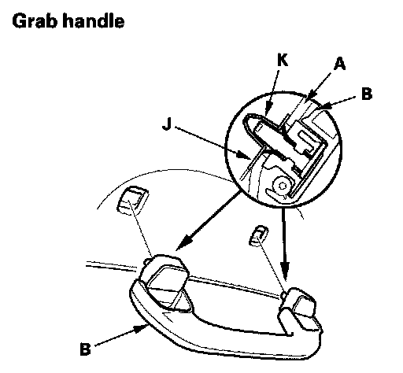
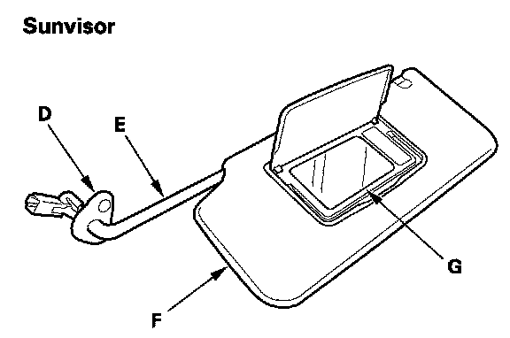
12. Install the headliner in the reverse order of removal, and note these items:
- If the side curtain airbag has deployed, replace the headliner and removed trim pieces with new ones.
- To prevent the side curtain airbags from deploying improperly and possibly causing injury, inspect removed pieces and replace them if they have any of these types of damage:
- Any crease or tears in the headliner (A)
- Any cracks or breakages in the grab handle (B)
- Any damages around the grab handle holes (C) or sunvisor holes in the headliner
- Any cracks in the sunvisor stay base (D)
- Any bends or cracks in the sunvisor stay shaft (E)
- Any cracks in the sunvisor base (F)
- Any cracks or breakages in the vanity mirror base (G)
- Any fasteners (H) and clip bases (I) which have come off the headliner
- When installing the grab handle, push on the handle against the bracket (J) until the clips (K) snap into place securely.
- Check if the clips are damaged or stress-whitened, and if necessary, replace them with new ones.
- Replace the removed cushion tape with new ones.
- Check that both sides of the headliner are securely attached to the trim.
- Make sure the headliner overlaps the trim pieces correctly.
- When reinstalling the headliner through the tailgate opening, be careful not to fold or bend it. Also, be careful not to scratch the body.